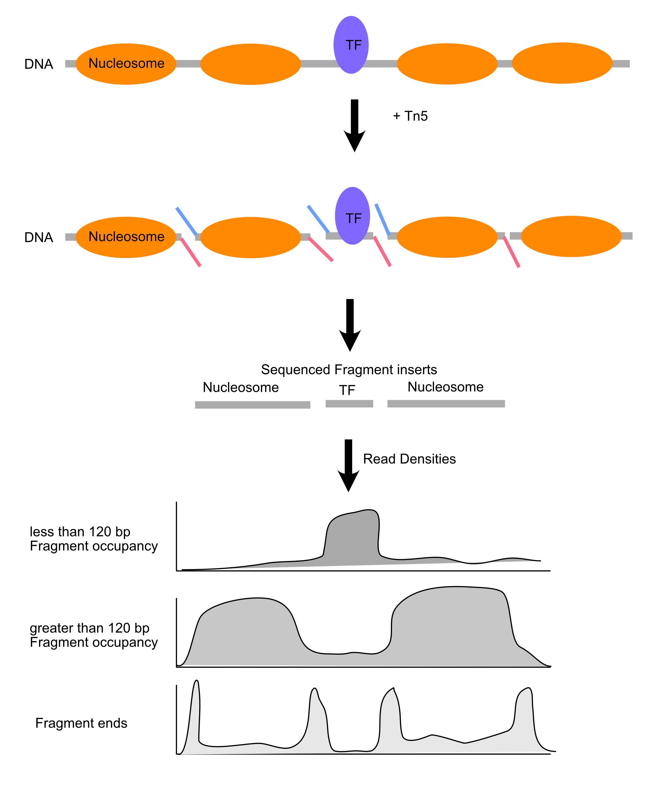

Chromatin accessibility I
Chromatin-centric measurement of genomic features
Chromatin accessibility patterns and genome function
This class we’ll examine chromatin accessibility patterns and begin to get a sense of what they mean, both at the fine-scale (single base-pair) and across the genome.
Load the libraries
These are libraries we’ve used before. patchwork is a library for composing groups of plots.
These are new libraries specifically for genome analysis. You learned about valr and Gviz for your homework.
rtracklayer provides a few utility functions we’ll use today, and TxDb.Scerevisiae.UCSC.sacCer3.sgdGene provides gene annotations for the S. cerevisiae genome.
Load the data
In this and the next class we will analyze ATAC-seq and MNase-seq data sets from budding yeast. Here are the references for the two data set:
ATAC-seq
Schep AN, Buenrostro JD, Denny SK, Schwartz K, Sherlock G, Greenleaf WJ. Structured nucleosome fingerprints enable high-resolution mapping of chromatin architecture within regulatory regions. Genome Res. 2015 PMID: 26314830; PMCID: PMC4617971. [Link] [Data]
MNase-seq
Zentner GE, Henikoff S. Mot1 redistributes TBP from TATA-containing to TATA-less promoters. Mol Cell Biol. 2013 PMID: 24144978; PMCID: PMC3889552. [Link] [Data]
Experimental consideration
In a standard MNase-seq experiment, DNA around ~150 bp is extracted to look closely at nucleosome occupancy & positioning. However, the above study did not perform size selection. This is important as now we can look at both transcription factor binding sites and nucleosome positions.
Fragment size distributions are informative
First, we will determine the fragment size distributions obtained from the two experiments. These sizes are the fingerprints of particles that were protecting nuclear DNA from digestion.
I have performed the alignment of paired-end reads and converted all reads into a bed file where each line of the bed file denotes a single fragment from start to end.
First, load the ATAC-seq reads. They’re in a BED file, so we’ll use what function from valr?
atac_tbl <- read_???(
here("data/block-dna/yeast_atac_chrII.bed.gz"),
)
atac_tblNext, load the MNase reads.
mnase_tbl <- read_???(
here("data/block-dna/yeast_mnase_chrII.bed.gz")
)
mnase_tblExpectations for chromatin fragment lengths
Let’s remind ourselves of the expectations for chromatin fragment lengths from MNase-seq and ATAC-seq experiments.
MNase-seq

ATAC-seq

Length distributions of chromatin-derived DNA fragments
For the MNase-seq BED file, you see that there are only three columns: chrom, start, and end. How do we calculate fragment length?
mutate(mnase_tbl, frag_len = ___ - ___)Let’s use this approach to examine the fragment length distribution. First, we’ll combine all the MNase and ATAC data into one tibble.
Next, we’ll make a histogram and facet by the type we defined above.
ggplot(
acc_tbl,
# define the x-axis as fragment length
aes(x = ___ - ___)
) +
geom_histogram(
# how to define single base-pair resolution?
# ?geom_histogram
___ = 1
) +
facet_grid(
rows = vars(type),
scales = "free_y"
) +
xlim(30, 500) +
labs(
x = "fragment length (bp)",
title = "Histogram of fragment lengths from\naccessibility measurements"
) +
theme_cowplot()Interpretations
How would you describe the two fragment length distributions? Are they similar?
Can you make any biological conclusions based on the length distributions?
Periodicity in the fragment lengths
The ATAC data seems to be periodic. How can we test that hypothesis? We can calculate the autocorrelation of the length distribution. Can someone explain what autocorrelation means?
Let’s write a function to calculate densities of the above histogram.
fragment_len_density <- function(tbl) {
mutate(
tbl,
frag_len = end - start
) |>
filter(
frag_len >= 30 &
frag_len <= 500
) |>
count(frag_len) |>
# now, calculate weighted counts
mutate(___ = ___ / ___) |>
pull(___)
}Now let’s use that function to calculate the density of ATAC fragment lengths.
atac_frag_len_density <- fragment_len_density(atac_tbl)We now have a vector of densities of fragment lengths at base-pair resolution. We will use acf() to calculate the autocorrelation of these values and store the tidied result.
atac_acf_tbl <-
___(
atac_frag_len_density,
lag.max = 40,
plot = FALSE
) |>
broom::tidy()
atac_acf_tblNow let’s plot the autocorrelation.
plot_acf <- function(tbl, title) {
ggplot(
tbl,
aes(lag, acf)
) +
geom_point(size = 2) +
geom_line() +
theme_minimal_grid() +
labs(title = title)
}plot_atac_acf <- plot_acf(atac_acf_tbl, title = "ATAC ACF")
plot_atac_acfLet’s add lines to annotate where we think the inflection points are.
# add vertical lines to the plot
atac_acf_tbl + geom_???(xintercept = c(___, ___), colo = "red")Let’s also compare this to the MNase data, which doesn’t seem to have the same pattern.
We can see a monotonic decrease in the MNase-seq data, which confirms that the bumps we see are distinctive features of ATAC-seq data.
What are these features? Consider that the specificity of binding of DNase, MNase, and Tn5 is not completely generic. These enzymes have specificity for the minor groove of DNA, and there is an optimal substrate geometry for cleavage. You can see this in previous studies, where DNase-seq revealed high-resolution views of DNA:protein structures.
So what then, exactly is the ~10-11 bp periodicity? And why is this not present in MNase data?

Visualize read density in genomic regions
We will use Gviz to visualize read densities relative to a reference sequence.
Load tracks
First, we load the gene annotations from the Saccharomyces Genome Databases (SGD).
track_start <- 530000
track_end <- 540000
sgd_genes <-
GeneRegionTrack(
TxDb.Scerevisiae.UCSC.sacCer3.sgdGene,
chromosome = "chrII",
start = track_start,
end = track_end,
)
sgd_genesGeneRegionTrack 'GeneRegionTrack'
| genome: sacCer3
| active chromosome: chrII
| annotation features: 8Next, import the bigwig file containing yeast nucleosome-sized fragments (via MNase-seq) using rtracklayer::import.bw().
Inspect the object. What is “GRanges”?
mnase_nuc_gr <- import.bw(
here("data/block-dna/yeast_mnase_134_160.bw"),
as = "GRanges"
)
mnase_nuc_grGRanges object with 81160 ranges and 1 metadata column:
seqnames ranges strand | score
<Rle> <IRanges> <Rle> | <numeric>
[1] chrII 10-19 * | 3.81086
[2] chrII 20-29 * | 3.81086
[3] chrII 30-39 * | 5.71629
[4] chrII 40-49 * | 5.71629
[5] chrII 50-59 * | 5.71629
... ... ... ... . ...
[81156] chrII 813130-813139 * | 15.24344
[81157] chrII 813140-813149 * | 7.62172
[81158] chrII 813150-813159 * | 7.62172
[81159] chrII 813160-813169 * | 7.62172
[81160] chrII 813170-813179 * | 5.71629
-------
seqinfo: 1 sequence from an unspecified genomeNext, load the GRanges object as a track for Gviz to plot:
mnase_nuc_trk <- DataTrack(
mnase_nuc_gr,
name = "MNase_nuc"
)
mnase_nuc_trkDataTrack 'MNase_nuc'
| genome: NA
| active chromosome: chrII
| positions: 81160
| samples:1
| strand: * Now, we can make a plot for this particular region of chrII:
# special track for the x-axis
x_axis <- GenomeAxisTrack()
plotTracks(
c(
sgd_genes,
mnase_nuc_trk,
x_axis
),
from = track_start,
to = track_end,
chromosome = "chrII",
transcriptAnnotation = "gene",
shape = "arrow",
type = "histogram"
)
Load the remaining data
That looks great! Let’s load all the other data sets.
- Load each bigWig as a GRanges object with
rtracklayer::import.bw() - Convert each to a
Gviz::DataTrack()for plotting
We can do this one of two ways. We can do it one-by-one:
Or we can create a tibble with file and track names, and use purrr to load and convert each one. First, we make a tibble containing file names and paths.
Then, we use purrr::map to “map” the import.bw() function onto each item in the file_path column, then then convert each of the results into a DataTrack.
Now, we just have to make a list of tracks to plot and Gviz takes care of the rest.
plotTracks(
c(
sgd_genes,
track_info$data_track
),
from = track_start,
to = track_end,
chromosome = "chrII",
transcriptAnnotation = "gene",
shape = "arrow",
type = "histogram"
)
Interpretations
Recall this plot:
Some questions to think about as you look at the tracks:
- What is each data set reporting on?
- What are the major differences between MNase-seq and ATAC-seq based on these tracks?
- What can you infer about gene regulation based on these tracks?
Homework
Your homework tonight is to review the material from today. We’ll build on these concepts on Friday, and your problem set will integrate all of these concepts.
In particular, you should think a little about what the peaks are in the MNase-seq plot are that appear between ~90-120 bp. Consider the chromatin state at a model gene. What types of chromatin transitions occur during gene expression that might generate these kinds of particles? We’ll talk more about this on Friday.